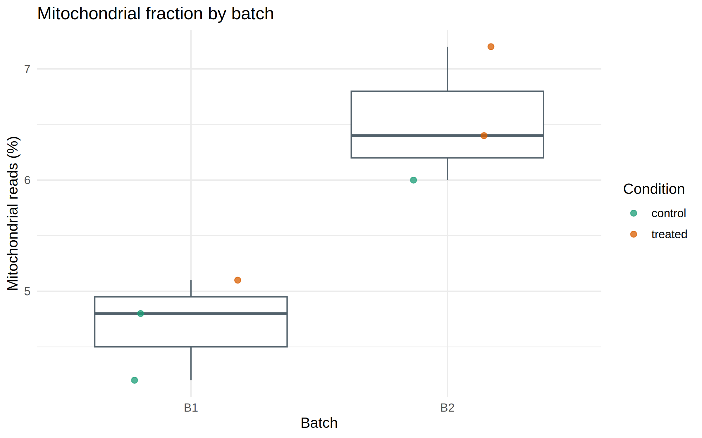
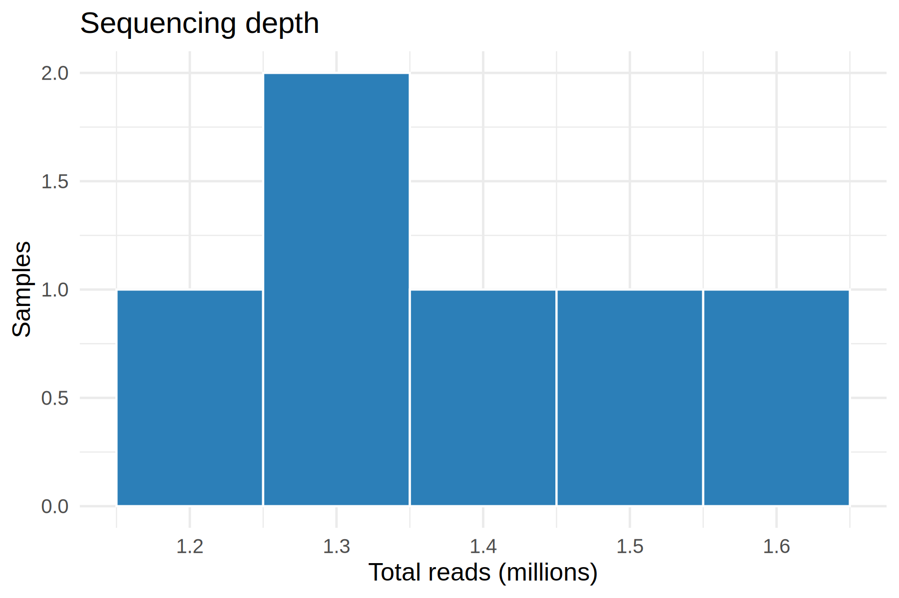
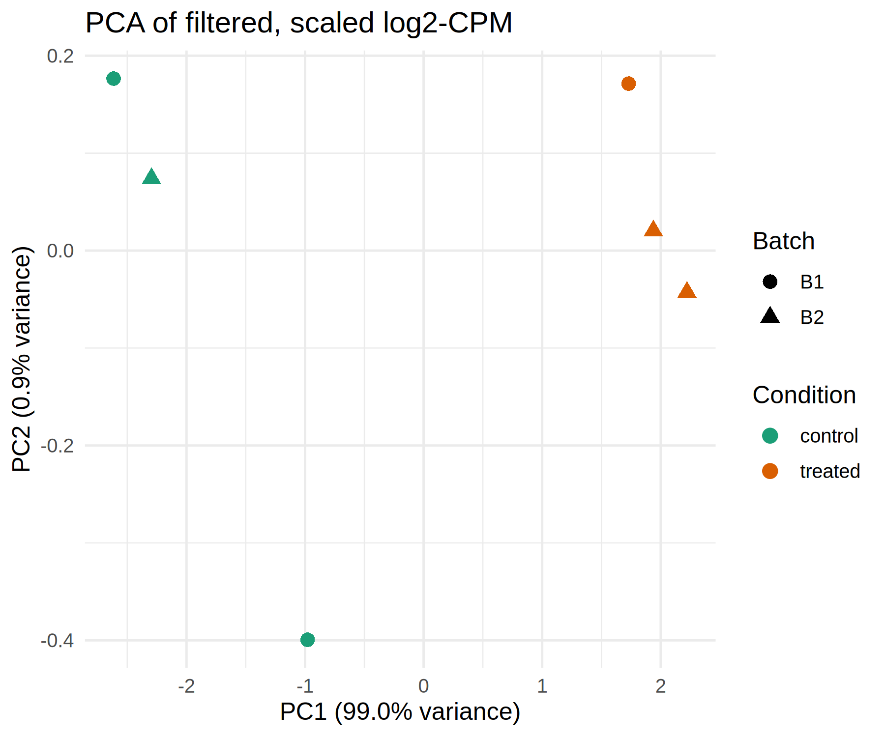
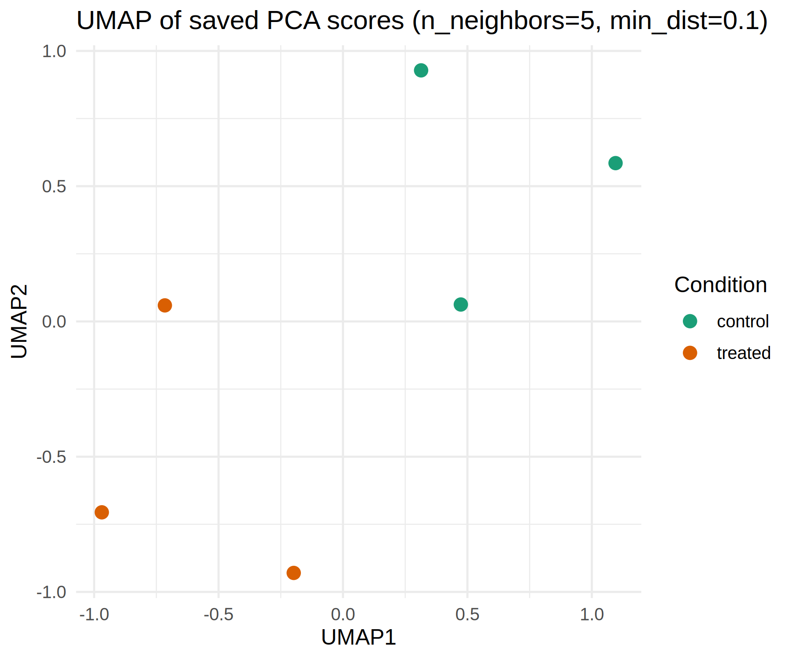
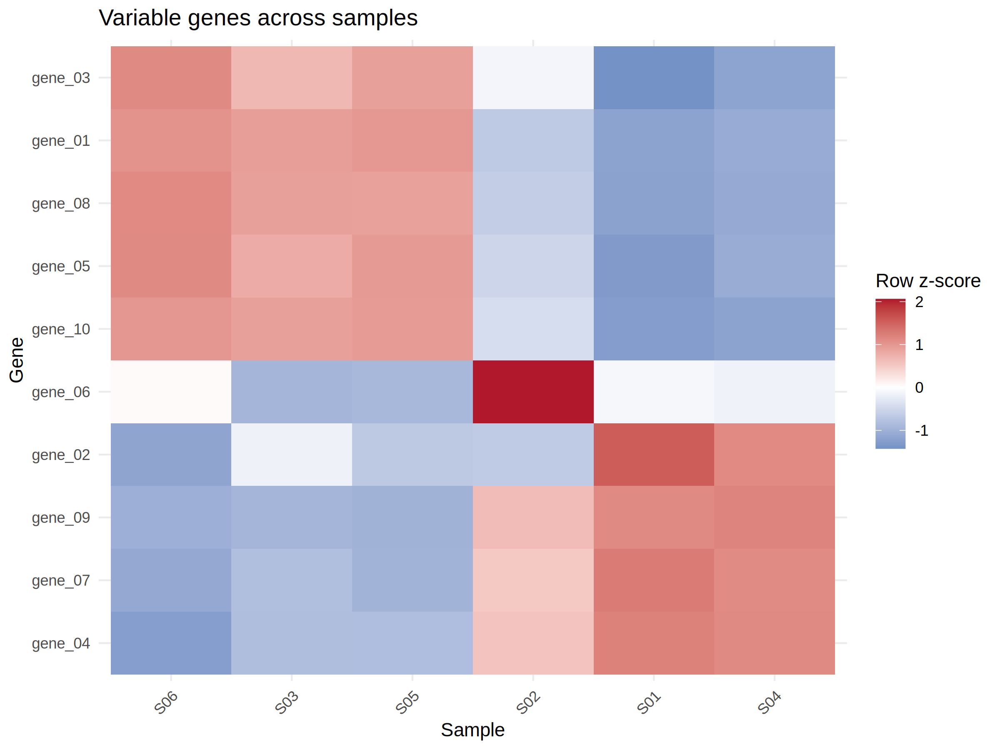
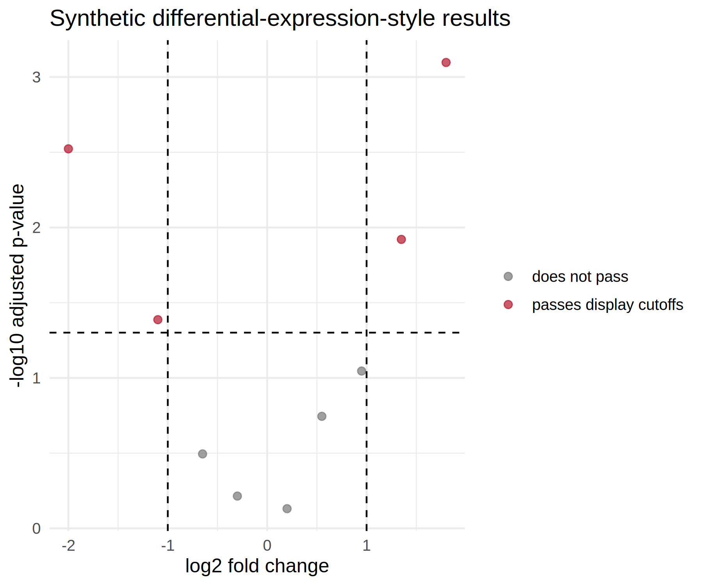

Data Visualization Fundamentals
Nasir Mahmood Abbasi, PhD
Bioinformatics Educator

A plot can reveal a pattern in an assay, but its appearance depends on preprocessing, model assumptions, and the samples included. This R-first walkthrough uses an R Markdown report to create and interpret common QC, sample-structure, expression-pattern, and differential-expression plots, with Python alternatives for the same plotting tasks.
Format: Hands-on lab. Learners with basic R and tabular-data familiarity will render a supplied R Markdown report and inspect QC, PCA, UMAP, heatmap, and volcano-plot outputs from synthetic tables. Python is available as an alternative for each plotting task. No biological data are supplied or analyzed.
Start with the question and the data contract
Choose a plot to answer a defined question. Distributions help compare per-sample QC metrics; PCA summarizes major linear variation among samples; UMAP emphasizes neighborhood structure in a chosen feature space; a heatmap displays selected values across genes and samples; and a volcano plot combines an effect estimate with an adjusted significance measure from a differential-expression analysis.
- Use sample-level QC values with one row per sample and columns such as
sample,batch,condition,total_reads,pct_mt, andmapping_rate. Confirm whether percentages are stored as 5.2 or 0.052 before labeling the axis. - For the expression examples,
counts.tsvhas gene IDs in its first column and one sample per remaining column. Its sample names must match the QC table. Use non-negative raw counts for a count-based differential-expression method; a visualization transform such as log-CPM is not a replacement for that method's input contract. - Examples write into
results/, which must exist first. Replace example paths with yours. These snippets are recipes, not evidence that any biological dataset was analyzed here.
Run the R Markdown lab
- Download the files. Get the R Markdown report, QC table, count table, and DE-style results table. All three tables contain invented teaching values, not biological observations or results from a fitted DESeq2 model.
- Set up the project. Place the report at the project root. In an R console, create folders with
dir.create("data", showWarnings = FALSE)anddir.create("results", showWarnings = FALSE). Save the QC and count tables asdata/qc_metrics.tsvanddata/counts.tsv; save the DE-style table asresults/deseq2_results.tsv. The count fixture has 10 genes and six samples (S01–S06), matched to six QC rows. - Install the R packages once, if needed. Rendering requires
rmarkdownandknitr; plots useggplot2anduwot. In R, runinstall.packages(c("rmarkdown", "ggplot2", "uwot")). This report does not install packages automatically. - Check Pandoc after installing those packages. RStudio includes Pandoc. With standalone R, run
Rscript -e 'rmarkdown::pandoc_available()'; it should reportTRUE. If it reportsFALSE, install Pandoc using the official installation guide, then check again. - Render the report. From the project directory, run
Rscript -e 'rmarkdown::render("data-visualization-fundamentals.Rmd", output_dir = "results")', or open the file in RStudio and choose Knit. The report checks inputs, writes figures and sample coordinates underresults/, and stops if key assumptions fail. Verify the report, figures, and coordinate tables exist. The R panels below can also be run individually from the project root.
The R and Python panels use the same synthetic inputs and address the same plotting task, but software defaults and implementations can change numerical coordinates, clustering order, or visual layout. Treat them as equivalent learning examples, not coordinate-by-coordinate reproductions.
Optional Python setup for the alternative panels
From the project directory, create an environment with python3 -m venv .venv and activate it with source .venv/bin/activate (Windows PowerShell: .venv\Scripts\Activate.ps1). Install the plotting dependencies with python -m pip install numpy pandas matplotlib seaborn scikit-learn umap-learn. Run the Python panels from the project root; they use the same synthetic TSV files and plotting tasks as the R examples.
The volcano example only plots a DE-style results table; it does not run differential-expression analysis. In real work, use results from a documented model and contrast, not this fixture. The report includes visible R and package-version output.
Success check: verify six QC rows, six matching count columns, and six sample rows in each coordinate TSV; confirm the QC, PCA, UMAP, heatmap, and volcano images exist. The synthetic volcano table deliberately has one missing adjusted p-value, which the code filters; inspect and report exclusions rather than interpreting the toy plot biologically.
Record sample count, filtering, normalization or transformation, scaling, plotting parameters, software versions, and any exclusions with each figure. QC thresholds depend on assay and protocol; do not apply a universal cutoff just because it makes a plot cleaner.
Inspect distributions before reducing dimensions
Plot points as well as summaries where the number of samples permits. A boxplot can conceal group size, overlapping observations, or a single unusual sample. The R example reads a tab-separated QC table and compares mitochondrial fraction across batches; the companion histogram shows sequencing depth in millions. The Python panel performs the same two descriptive plots.
R
library(ggplot2)
qc <- read.delim("data/qc_metrics.tsv", check.names = FALSE, stringsAsFactors = FALSE)
required <- c("sample", "batch", "condition", "total_reads", "pct_mt")
missing <- setdiff(required, names(qc))
if (length(missing)) stop("QC table is missing columns: ", paste(missing, collapse = ", "))
if (anyNA(qc$sample) || anyDuplicated(qc$sample)) stop("Expected one non-missing QC row per sample")
for (column in c("total_reads", "pct_mt")) {
qc[[column]] <- as.numeric(qc[[column]])
bad <- is.na(qc[[column]]) | !is.finite(qc[[column]])
if (any(bad)) stop("Invalid ", column, " for samples: ", paste(qc$sample[bad], collapse = ", "))
}
qc_boxplot <- ggplot(qc, aes(x = batch, y = pct_mt, color = condition)) +
geom_boxplot(aes(group = batch), outlier.shape = NA, color = "#52616B") +
geom_point(position = position_jitterdodge(jitter.width = 0.12, dodge.width = 0.75),
alpha = 0.75, size = 2) +
scale_color_brewer(palette = "Dark2") +
labs(x = "Batch", y = "Mitochondrial reads (%)",
title = "Mitochondrial fraction by batch", color = "Condition") +
theme_minimal(base_size = 12)
ggsave("results/qc_boxplot.png", qc_boxplot, width = 8, height = 5, dpi = 300, bg = "white")
print(qc_boxplot)
qc_histogram <- ggplot(qc, aes(x = total_reads / 1e6)) +
geom_histogram(bins = 5, fill = "#2C7FB8", color = "white") +
labs(x = "Total reads (millions)", y = "Samples",
title = "Sequencing depth") +
theme_minimal(base_size = 12)
ggsave("results/qc_histogram.png", qc_histogram, width = 6, height = 4, dpi = 300, bg = "white")
print(qc_histogram)Python alternative
import numpy as np
import pandas as pd
import seaborn as sns
import matplotlib.pyplot as plt
from pathlib import Path
Path("results").mkdir(exist_ok=True)
qc = pd.read_csv("data/qc_metrics.tsv", sep="\t")
required = {"sample", "batch", "condition", "total_reads", "pct_mt"}
missing = required.difference(qc.columns)
if missing:
raise ValueError(f"QC table is missing columns: {sorted(missing)}")
if qc["sample"].duplicated().any():
raise ValueError("Expected one QC row per sample")
for column in ["total_reads", "pct_mt"]:
qc[column] = pd.to_numeric(qc[column], errors="coerce")
bad = qc[column].isna() | ~np.isfinite(qc[column])
if bad.any():
raise ValueError(f"Invalid {column} for samples: {qc.loc[bad, 'sample'].tolist()}")
fig, ax = plt.subplots(figsize=(8, 5))
sns.boxplot(data=qc, x="batch", y="pct_mt", showfliers=False, ax=ax)
sns.stripplot(data=qc, x="batch", y="pct_mt", hue="condition",
dodge=True, jitter=0.2, palette="colorblind", alpha=0.6, ax=ax)
ax.set(xlabel="Batch", ylabel="Mitochondrial reads (%)",
title="Mitochondrial fraction by batch")
fig.tight_layout()
fig.savefig("results/qc_boxplot.png", dpi=300)
plt.close(fig)
fig, ax = plt.subplots(figsize=(6, 4))
sns.histplot(qc["total_reads"] / 1e6, kde=True, bins=20, ax=ax)
ax.set(xlabel="Total reads (millions)", title="Sequencing depth")
fig.tight_layout()
fig.savefig("results/qc_histogram.png", dpi=300)
plt.close(fig)The code reports missing, non-numeric, or non-finite values with affected sample IDs. The boxplot shows individual observations; the histogram summarizes a distribution and cannot identify which sample is an outlier. Follow an apparent extreme back to the QC table by sample ID and inspect library size, units, and provenance. With very small groups, treat the histogram/KDE shape as descriptive only. These checks do not decide whether a sample passes QC, and metric names do not define assay-specific thresholds.
PCA: summarize broad sample variation
PCA expects observations in rows and features in columns. Here rows become samples and columns genes. Both language examples compute log2-CPM, apply the stated variance rule, then standardize retained genes. R and scikit-learn use slightly different standard-deviation conventions; component signs are arbitrary, so coordinates can differ or appear mirrored without changing the underlying interpretation. That last choice gives low-variance genes similar scale to high-variance genes and can amplify noise; it is an exploratory choice, not a universal RNA-seq recommendation. Compare with a suitable variance-stabilizing transform and/or without feature-wise scaling for the assay and question at hand.
The cutoff of 0.01 below retains five of the ten genes in the supplied synthetic count table. A cutoff of 0.5 retains none, so there would be no matrix to plot or pass to UMAP. This small-fixture setting teaches the handoff; it is not a recommended threshold for a biological dataset. Inspect the variance distribution and justify feature selection for real data.
R
library(ggplot2)
counts <- read.delim("data/counts.tsv", row.names = 1, check.names = FALSE)
qc <- read.delim("data/qc_metrics.tsv", check.names = FALSE, stringsAsFactors = FALSE)
if (anyDuplicated(rownames(counts)) || anyDuplicated(colnames(counts))) {
stop("Gene IDs and sample IDs must be unique")
}
counts <- as.matrix(counts)
if (!is.numeric(counts) || any(!is.finite(counts)) || any(counts < 0)) {
stop("Counts must be finite, numeric, and non-negative")
}
if (any(colSums(counts) == 0)) stop("A sample has zero library size")
if (anyNA(qc$sample) || anyDuplicated(qc$sample)) stop("QC sample IDs must be unique and non-missing")
if (!setequal(colnames(counts), qc$sample)) {
stop("Counts and QC sample IDs differ; check both tables before plotting")
}
qc <- qc[match(colnames(counts), qc$sample), , drop = FALSE]
if (!identical(qc$sample, colnames(counts))) stop("Could not align QC metadata to count-matrix sample order")
logcpm <- log2(sweep(counts, 2, colSums(counts), "/") * 1e6 + 1)
variances <- apply(logcpm, 1, var)
keep <- variances > 0.01
if (sum(keep) < 2 || ncol(counts) < 2) {
stop("PCA needs at least two samples and two retained genes")
}
mat <- t(logcpm[keep, , drop = FALSE])
pca <- prcomp(mat, center = TRUE, scale. = TRUE)
if (ncol(pca$x) < 2) stop("PCA did not return two components for plotting")
explained <- pca$sdev^2 / sum(pca$sdev^2)
pc_scores <- as.data.frame(pca$x)
pc_scores$sample <- rownames(pc_scores)
write.table(pc_scores, "results/pca_full.tsv", sep = "\t", quote = FALSE, row.names = FALSE)
write.table(pc_scores[, c("sample", "PC1", "PC2")], "results/pca_coords.tsv",
sep = "\t", quote = FALSE, row.names = FALSE)
plot_data <- merge(pc_scores, qc[, c("sample", "condition", "batch")], by = "sample", sort = FALSE)
plot_data <- plot_data[match(pc_scores$sample, plot_data$sample), ]
pca_plot <- ggplot(plot_data, aes(x = PC1, y = PC2, color = condition, shape = batch)) +
geom_point(size = 3) +
scale_color_brewer(palette = "Dark2") +
labs(x = sprintf("PC1 (%.1f%% variance)", 100 * explained[1]),
y = sprintf("PC2 (%.1f%% variance)", 100 * explained[2]),
title = "PCA of filtered, scaled log2-CPM", color = "Condition", shape = "Batch") +
theme_minimal(base_size = 12)
ggsave("results/pca_plot.png", pca_plot, width = 6, height = 5, dpi = 300, bg = "white")
print(pca_plot)Python alternative
import numpy as np
import pandas as pd
import matplotlib.pyplot as plt
import seaborn as sns
from sklearn.decomposition import PCA
from sklearn.preprocessing import StandardScaler
from pathlib import Path
Path("results").mkdir(exist_ok=True)
counts = pd.read_csv("data/counts.tsv", sep="\t", index_col=0)
qc = pd.read_csv("data/qc_metrics.tsv", sep="\t").set_index("sample")
if counts.index.has_duplicates or counts.columns.has_duplicates:
raise ValueError("Gene IDs and sample IDs must be unique")
if (counts < 0).any().any() or not np.isfinite(counts.to_numpy()).all():
raise ValueError("Counts must be finite and non-negative")
if (counts.sum(axis=0) == 0).any():
raise ValueError("A sample has zero library size")
if qc.index.has_duplicates:
raise ValueError("QC sample IDs must be unique")
if set(counts.columns) != set(qc.index):
missing_qc = sorted(set(counts.columns) - set(qc.index))
extra_qc = sorted(set(qc.index) - set(counts.columns))
raise ValueError(f"Counts/QC sample IDs differ; missing QC: {missing_qc}; extra QC: {extra_qc}")
qc = qc.reindex(counts.columns)
if not qc.index.equals(counts.columns):
raise ValueError("QC metadata could not be aligned to count-matrix sample order")
cpm = counts.div(counts.sum(axis=0), axis=1) * 1e6
logcpm = np.log2(cpm + 1)
keep = logcpm.var(axis=1) > 0.01 # for this tiny synthetic fixture; justify for real data
if keep.sum() < 2 or counts.shape[1] < 2:
raise ValueError("PCA plot needs at least two samples and two retained genes")
mat = logcpm.loc[keep].T # samples x genes
scaled = StandardScaler().fit_transform(mat)
n_components = min(10, scaled.shape[0], scaled.shape[1])
pca = PCA(n_components=n_components, random_state=7)
coords = pca.fit_transform(scaled)
columns = [f"PC{i+1}" for i in range(coords.shape[1])]
pcs = pd.DataFrame(coords, columns=columns, index=mat.index)
pc1_2 = pcs[["PC1", "PC2"]]
pc1_2.to_csv("results/pca_coords.tsv", sep="\t", index_label="sample")
pcs.to_csv("results/pca_full.tsv", sep="\t", index_label="sample")
plot_df = pc1_2.join(qc[["condition", "batch"]], how="left", validate="one_to_one")
fig, ax = plt.subplots(figsize=(6, 5))
sns.scatterplot(data=plot_df, x="PC1", y="PC2", hue="condition",
style="batch", palette="colorblind", s=60, ax=ax)
ax.set(xlabel=f"PC1 ({pca.explained_variance_ratio_[0]*100:.1f}% variance)",
ylabel=f"PC2 ({pca.explained_variance_ratio_[1]*100:.1f}% variance)",
title="PCA of filtered, scaled log2-CPM")
fig.tight_layout()
fig.savefig("results/pca_plot.png", dpi=300)
plt.close(fig)The TSVs preserve sample coordinates for later checks. PC1/PC2 percentages describe variance represented by those components under this exact preprocessing. A separation by batch is a cue to inspect design balance, metadata, and possible technical effects; it does not by itself establish a correction method or prove confounding. PCA centers input internally, while the explicit scaler also changes each gene's variance contribution.
UMAP: explore neighborhoods with a specified input
UMAP embeds the rows supplied to it. The example uses all saved PCs available, not the two columns intended for plotting. Small datasets may not support the default neighborhood size, so set n_neighbors below the number of observations and evaluate several sensible settings. n_neighbors changes the local-versus-broader structure considered; min_dist affects how tightly points may pack in the embedding. The coordinates are a visualization, not a calibrated distance scale.
R
library(ggplot2)
pc_scores <- read.delim("results/pca_full.tsv", check.names = FALSE)
qc <- read.delim("data/qc_metrics.tsv", check.names = FALSE, stringsAsFactors = FALSE)
if (!"sample" %in% names(pc_scores) || anyDuplicated(pc_scores$sample)) {
stop("PCA scores need unique sample IDs")
}
if (anyDuplicated(qc$sample) || !setequal(pc_scores$sample, qc$sample)) {
stop("PCA and QC sample IDs differ or are not unique")
}
qc <- qc[match(pc_scores$sample, qc$sample), , drop = FALSE]
if (!identical(qc$sample, pc_scores$sample)) stop("Could not align QC metadata to PCA sample order")
score_columns <- grep("^PC[0-9]+$", names(pc_scores), value = TRUE)
if (length(pc_scores$sample) < 3 || length(score_columns) < 2) {
stop("UMAP needs at least three samples and two PCA score columns")
}
n_neighbors <- min(15, nrow(pc_scores) - 1)
set.seed(7)
embedding <- uwot::umap(as.matrix(pc_scores[, score_columns, drop = FALSE]),
n_neighbors = n_neighbors, min_dist = 0.1,
n_components = 2, metric = "euclidean",
n_threads = 1, n_sgd_threads = 1, verbose = FALSE)
umap_coords <- data.frame(sample = pc_scores$sample,
UMAP1 = embedding[, 1], UMAP2 = embedding[, 2])
write.table(umap_coords, "results/umap_coords.tsv", sep = "\t",
quote = FALSE, row.names = FALSE)
umap_plot_data <- merge(umap_coords, qc[, c("sample", "condition")],
by = "sample", sort = FALSE)
umap_plot_data <- umap_plot_data[match(umap_coords$sample, umap_plot_data$sample), ]
umap_plot <- ggplot(umap_plot_data, aes(x = UMAP1, y = UMAP2, color = condition)) +
geom_point(size = 3) +
scale_color_brewer(palette = "Dark2") +
labs(title = sprintf("UMAP of saved PCA scores (n_neighbors=%d, min_dist=0.1)", n_neighbors),
color = "Condition") +
theme_minimal(base_size = 12)
ggsave("results/umap_plot.png", umap_plot, width = 6, height = 5, dpi = 300, bg = "white")
print(umap_plot)Python alternative
import pandas as pd
import matplotlib.pyplot as plt
import seaborn as sns
import umap
from pathlib import Path
Path("results").mkdir(exist_ok=True)
pc_scores = pd.read_csv("results/pca_full.tsv", sep="\t", index_col="sample")
qc = pd.read_csv("data/qc_metrics.tsv", sep="\t").set_index("sample")
if len(pc_scores) < 3:
raise ValueError("UMAP needs more observations than this example provides")
if pc_scores.index.has_duplicates or qc.index.has_duplicates:
raise ValueError("PCA and QC sample IDs must each be unique")
if set(pc_scores.index) != set(qc.index):
missing_qc = sorted(set(pc_scores.index) - set(qc.index))
extra_qc = sorted(set(qc.index) - set(pc_scores.index))
raise ValueError(f"PCA/QC sample IDs differ; missing QC: {missing_qc}; extra QC: {extra_qc}")
qc = qc.reindex(pc_scores.index)
if not qc.index.equals(pc_scores.index):
raise ValueError("QC metadata could not be aligned to PCA sample order")
n_neighbors = min(15, len(pc_scores) - 1)
reducer = umap.UMAP(n_neighbors=n_neighbors, min_dist=0.1,
n_components=2, metric="euclidean", random_state=7)
embedding = reducer.fit_transform(pc_scores.to_numpy())
coords = pd.DataFrame(embedding, index=pc_scores.index,
columns=["UMAP1", "UMAP2"])
coords.to_csv("results/umap_coords.tsv", sep="\t", index_label="sample")
plot_df = coords.join(qc[["condition"]], validate="one_to_one")
fig, ax = plt.subplots(figsize=(6, 5))
sns.scatterplot(data=plot_df, x="UMAP1", y="UMAP2", hue="condition",
palette="colorblind", s=40, ax=ax)
ax.set_title(f"UMAP of saved PCA scores (n_neighbors={n_neighbors}, min_dist=0.1)")
fig.tight_layout()
fig.savefig("results/umap_plot.png", dpi=300)
plt.close(fig)A fixed random state helps make a run repeatable under a fixed environment, but does not make the embedding biologically definitive or guarantee identical coordinates across R and Python UMAP implementations, software versions, or platforms. Compare labels and parameter choices without reading global distances or island spacing as quantitative evidence.
Heatmaps: show a declared scale
The following approach selects variable genes from log-CPM and computes a row z-score so each gene's relative pattern across samples is visible. A red/blue cell then means above/below that gene's mean in the plotted samples, not an absolute expression level or a fold change between genes. Constant rows and missing values must be dealt with before hierarchical clustering.
R
library(ggplot2)
counts <- read.delim("data/counts.tsv", row.names = 1, check.names = FALSE)
counts <- as.matrix(counts)
if (!is.numeric(counts) || any(!is.finite(counts)) || any(counts < 0) || any(colSums(counts) == 0)) {
stop("Counts must be finite and non-negative, with nonzero library sizes")
}
logcpm <- log2(sweep(counts, 2, colSums(counts), "/") * 1e6 + 1)
variances <- apply(logcpm, 1, var)
top <- names(sort(variances, decreasing = TRUE))[seq_len(min(50, length(variances)))]
selected <- logcpm[top, , drop = FALSE]
row_sd <- apply(selected, 1, function(x) sqrt(mean((x - mean(x))^2)))
selected <- selected[row_sd > 0, , drop = FALSE]
if (anyNA(selected) || nrow(selected) < 2 || ncol(selected) < 2) {
stop("Need at least two non-constant genes, two samples, and no missing values")
}
z <- t(apply(selected, 1, function(x) (x - mean(x)) / sqrt(mean((x - mean(x))^2))))
row_order <- hclust(dist(z), method = "average")$order
column_order <- hclust(dist(t(z)), method = "average")$order
z_ordered <- z[row_order, column_order, drop = FALSE]
heatmap_data <- as.data.frame(as.table(z_ordered), stringsAsFactors = FALSE)
names(heatmap_data) <- c("gene_id", "sample", "z_score")
heatmap_data$gene_id <- factor(heatmap_data$gene_id, levels = rev(rownames(z_ordered)))
heatmap_data$sample <- factor(heatmap_data$sample, levels = colnames(z_ordered))
heatmap_plot <- ggplot(heatmap_data, aes(x = sample, y = gene_id, fill = z_score)) +
geom_tile() +
scale_fill_gradient2(low = "#2166AC", mid = "white", high = "#B2182B", midpoint = 0) +
labs(x = "Sample", y = "Gene", fill = "Row z-score",
title = "Variable genes across samples") +
theme_minimal(base_size = 11) +
theme(axis.text.x = element_text(angle = 45, hjust = 1))
ggsave("results/heatmap_topgenes.png", heatmap_plot, width = 8, height = 6, dpi = 300, bg = "white")
print(heatmap_plot)Python alternative
import numpy as np
import pandas as pd
import seaborn as sns
import matplotlib.pyplot as plt
from pathlib import Path
Path("results").mkdir(exist_ok=True)
counts = pd.read_csv("data/counts.tsv", sep="\t", index_col=0)
if (counts < 0).any().any() or (counts.sum(axis=0) == 0).any():
raise ValueError("Counts must be non-negative and each sample needs a nonzero library size")
logcpm = np.log2(counts.div(counts.sum(axis=0), axis=1) * 1e6 + 1)
variances = logcpm.var(axis=1)
top = variances.nlargest(min(50, len(variances))).index
selected = logcpm.loc[top]
row_sd = selected.std(axis=1, ddof=0)
selected = selected.loc[row_sd > 0]
if selected.isna().any().any() or selected.shape[0] < 2:
raise ValueError("Need at least two non-constant genes and no missing values")
z = selected.sub(selected.mean(axis=1), axis=0).div(
selected.std(axis=1, ddof=0), axis=0)
grid = sns.clustermap(z, method="average", metric="euclidean",
row_cluster=True, col_cluster=True, cmap="vlag",
center=0, figsize=(10, 10))
grid.savefig("results/heatmap_topgenes.png", dpi=300)
plt.close(grid.fig)Clustering method and distance metric affect the ordering. The R panel orders rows and columns by hierarchical clustering but does not draw a dendrogram; the Python clustermap also displays dendrograms. A heatmap can show relative patterns or sample groupings under those choices; it does not establish a pathway, shared regulation, or causal relationship. For very small tables, highly variable genes, or strongly imbalanced samples, state the selection rule and inspect whether clustering is stable.
Volcano plots: display model results, not raw counts
A volcano plot uses differential-expression output. In this DESeq2-style table, log2FoldChange is the estimated effect and padj is the adjusted p-value; missing adjusted values can occur and should not be silently plotted as zero. The thresholds below are illustrative display cutoffs, not universal biological criteria. Do not use this plot as a substitute for checking the model, design, contrasts, and multiple-testing procedure.
R
library(ggplot2)
res <- read.delim("results/deseq2_results.tsv", stringsAsFactors = FALSE)
required <- c("log2FoldChange", "padj")
if (!all(required %in% names(res))) stop("Input needs log2FoldChange and padj columns")
valid <- is.finite(res$log2FoldChange) & !is.na(res$padj) &
is.finite(res$padj) & res$padj > 0 & res$padj <= 1
cat("Rows omitted for non-finite effects, missing adjusted p-values, or padj outside (0, 1]: ",
sum(!valid), "\n", sep = "")
res <- res[valid, , drop = FALSE]
res$label <- ifelse(res$padj < 0.05 & abs(res$log2FoldChange) > 1,
"passes display cutoffs", "does not pass")
volcano_plot <- ggplot(res, aes(x = log2FoldChange, y = -log10(padj), color = label)) +
geom_point(alpha = 0.7, size = 2) +
scale_color_manual(values = c("does not pass" = "#777777",
"passes display cutoffs" = "#B2182B")) +
geom_vline(xintercept = c(-1, 1), linetype = "dashed") +
geom_hline(yintercept = -log10(0.05), linetype = "dashed") +
labs(x = "log2 fold change", y = "-log10 adjusted p-value",
color = NULL, title = "Synthetic differential-expression-style results") +
theme_minimal(base_size = 12)
ggsave("results/volcano.png", volcano_plot, width = 6, height = 5, dpi = 300, bg = "white")
print(volcano_plot)Python alternative
import numpy as np
import pandas as pd
import matplotlib.pyplot as plt
res = pd.read_csv("results/deseq2_results.tsv", sep="\t")
required = {"log2FoldChange", "padj"}
missing = required.difference(res.columns)
if missing:
raise ValueError(f"Input needs columns: {sorted(missing)}")
for column in required:
res[column] = pd.to_numeric(res[column], errors="coerce")
valid = (np.isfinite(res["log2FoldChange"]) & res["padj"].notna() &
np.isfinite(res["padj"]) & res["padj"].gt(0) & res["padj"].le(1))
print(f"Rows omitted for non-finite effects, missing adjusted p-values, or padj outside (0, 1]: {(~valid).sum()}")
res = res.loc[valid].copy()
res["label"] = np.where((res["padj"] < 0.05) & (res["log2FoldChange"].abs() > 1),
"passes display cutoffs", "does not pass")
fig, ax = plt.subplots(figsize=(6, 5))
for label, group in res.groupby("label", sort=False):
color = "#B2182B" if label == "passes display cutoffs" else "#777777"
ax.scatter(group["log2FoldChange"], -np.log10(group["padj"]),
color=color, alpha=0.7, s=24, label=label)
ax.axvline(-1, linestyle="--", color="#555555")
ax.axvline(1, linestyle="--", color="#555555")
ax.axhline(-np.log10(0.05), linestyle="--", color="#555555")
ax.set(xlabel="log2 fold change", ylabel="-log10 adjusted p-value",
title="Synthetic differential-expression-style results")
ax.legend(frameon=False)
fig.tight_layout()
fig.savefig("results/volcano-python.png", dpi=300, facecolor="white")
plt.close(fig)Rows with zero adjusted p-values would have an infinite plotted value and are omitted here along with missing values. Report how many rows were omitted and why in a real analysis, especially if filtering or independent filtering produced missing adjusted p-values. A small adjusted p-value can accompany a small effect; statistical evidence and biological importance are separate judgments.
Use plots as diagnostics, then follow up
- QC shifts: verify metric units, group sizes, and metadata; a batch shift can arise from technical or design differences, but a plot alone cannot identify its cause.
- PCA separation: inspect the explained variance, sample labels, design balance, and component loadings. Consider the experimental model before choosing batch correction; indiscriminate correction can remove biological signal.
- Fragmented UMAP: check feature selection, sample count, scaling, and parameter sensitivity. Raising
n_neighborsbroadens neighborhoods, while changingmin_distchanges packing; neither guarantees meaningful clusters. - Uniform heatmap: check transformation, selected features, and color limits. Row scaling may reveal relative patterns while hiding absolute amplitude.
- Volcano extremes: check missing or zero adjusted p-values, effect-size estimates, model formula, contrast, and multiplicity correction before labeling candidates.
Save the plotting code and intermediate coordinates alongside the figure. Captions should identify the dataset and number of samples, transformation and filtering, encoding and thresholds, package versions, and the main limitation. Use accessible palettes and do not encode an essential distinction by color alone.
What this run produced
These are the actual PNG files saved by the downloadable R Markdown lab, not illustrations. They use the supplied invented teaching tables. No biological observations or fitted differential-expression results are shown.






Run details and limits
The complete supplied R report rendered successfully with R 4.3.3, ggplot2 3.4.4, uwot 0.1.16, rmarkdown 2.25, and Pandoc 3.1.3 on Linux. All five Python plotting alternatives also ran on the same tables.
Checks confirmed six matching sample IDs, finite PCA and UMAP coordinates, and six non-empty figure files for each language. The volcano step omitted the one missing adjusted p-value. R and Python UMAP coordinates are not expected to match.
This verifies the supplied plotting exercise in this environment, not every possible input, operating system, or upstream biological analysis. Inspect the execution evidence.
References
- R stats::prcomp documentation and the uwot package guide
- scikit-learn PCA API and StandardScaler API (Python alternative)
- uwot reference manual and umap-learn basic usage (Python alternative)
- seaborn clustermap API
- DESeq2 package documentation
- ggplot2 ggsave documentation